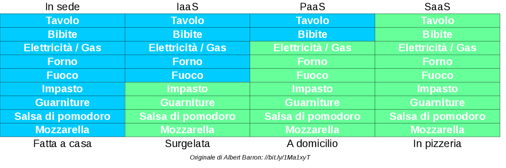

Nuove risorse digitali e didattica
Loris Tissino
 @loristissino
@loristissino 
Aprile 2016
TIC vs TAC
TIC
Tecnologie dell'Informazione e della Comunicazione
(focus sullo strumento)
TAC
Tecnologie dell'Apprendimento e della Conoscenza
(focus sulla mission dell'insegnante)
Si impara meglio se...
- si ha un ruolo attivo
- si svolge un'attività
- si costruisce un prodotto
- si collabora
- si rappresenta ciò che si è appreso

SAMR
- Substitution: es. scrittura al computer anziché su carta
- Augmentation: es. elaboratore testi con immagini, inserimento immagini, link interni ed esterni
- Modification: es. scrittura collaborativa
- Redefinition: es. pubblicazione su blog, interazione con esterni, ecc.
Software / Hardware
Software
- applicazioni desktop
- applicazioni web
- app per dispositivi mobili
- bot

Fattori da considerare
- software libero (open source) / proprietario
- costo del servizio
- età minima utenti
- multipiattaforma o meno
- solo desktop o multidevice
- possibilità di importazione / esportazione dati
da/verso formati standard
- uso online / offline
Hardware
- computer
- smartphone
- tablet
- lavagne interattive
- sistemi per fruizione di contenuti mm
- microcontrollori (arduino, raspberry pi)
- IoT
- robot
Modelli
Broadcasting
- lezioni frontali
- metodo trasmissivo
- moduli
- test
E-Learning
- learning objects
- forum
- test on line
Blended learning
- piattaforme digitali
- strumenti tipici dell'e-learning
- ... in aggiunta alla modalità tradizionale
Classe capovolta
- lezioni online seguite a casa
- esercitazioni a scuola
- BYOD - Bring Your Own Device (non necessariamente)
Produzione di contenuti
Da parte del docente
- tempi lunghi?
- competenze tecniche?
- diritti?
Da parte degli allievi
- come valutare i lavori?
- come distinguere abilità tecniche da competenze disciplinari?
Pubblicazione
- violazioni diritti d'autore?
- contenuti errati?
- forme discutibili?
- chi ha la responsabilità dei contenuti pubblicati?
- lezioni
- compiti
- quiz
- sondaggi
- discussioni
Edmodo.com
edmodo.com
Video: intervista a Lucia Bartolotti
Google Apps for Education
google.com/edu
Moodle
moodle.org
Altre...
Problema
Ci deve essere uniformità nelle soluzioni offerte dal consiglio di classe!
Strumenti utili
Dropbox
dropbox.com
Kahoot
kahoot.com
Quizlet
quizlet.com
Risorse on line
Risorse didattiche aperte
Pagina su Wikipedia
Ricerche di contenuti CC

Risorse utili
Scrittura collaborativa
Insieme
- commenti
- correzioni
- cronologia
In tempo reale
Etherpad/piratepad
Documenti condivisi
WYSIWYG
Strumenti basati su vc
WYWIWYM
MarkDown, anybody?
pandoc.org
Presentazioni
Strumenti
Raccolte
Link utili
Spunti
Colophon
Sorgente
Questo documento
Strumenti
Licenza

«Nuove risorse digitali e didattica» di Loris Tissino
è distribuito con Licenza
Creative Commons Attribuzione
Condividi allo stesso modo 4.0
Internazionale.